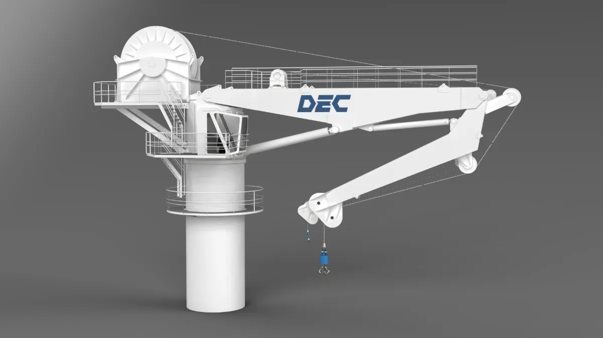

DEC KNUCKLE BOOM CRANE
DEC Knuckle Boom Cranes are designed to provide maximum flexibility, extended outreach, and precise load handling, making them ideal for offshore, marine and wind industry applications. With their articulated boom design, these cranes allow for precise lifting and positioning, even in confined spaces. Additionally, the knuckle boom design reduces wire pendulum, minimizing the risk of damage caused by swinging loads. Compared to a traditional luffing jib crane with the same outreach, a knuckle boom crane requires significantly less stowing space, making it a more compact and efficient solutions.
MARINE APPLICATIONS
DEC KNUCKLE BOOM CRANES are widely used in the marine industry due to their flexibility and high lifting capacity. The knuckle boom design allows for precise lifting and positioning, making them ideal for confined dec spaces
Typical Marine Aplications:
✔ Service Cranes
✔ Provision Cranes
✔ Container and General Cargo Handling
OFFSHORE APPLICATIONS
For offshore enviroments, DEC KNUCKLE BOOM CRANES are engineered to perform in extreme conditions, ensuring high-performance lifting and handling. The knuckle boom allows for safe and controlled load movement, even in rough sea conditions.
Typical Offshore Aplications:
✔ Shipboard Cranes–Installed on vessels for multi-purpose lifting tasks
✔ Ship-to-ship Cranes–Designed for secure and efficient cargo transfer between vessels
✔ Provision Cranes–Used for lifting and handling supplies on offshore platforms
WIND INDUSTRY APPLICATIONS
DEC KNUCKLE BOOM CRANES are extensively used in the wind industry to support offshore wind farms,particularly for unloading supply vessels and handling materials on Trasition Pieces(TP) and offshore platforms. The knuckle boom design allows for precise and stable lifting, even in high sea states.

KEY FEATURES
✅ Electro-hydraulic drive system: Ensures smooth and efficent crane operation
✅ Designed for Extreme Enviroments: Suitable for both low and high-temperature conditions
✅ Integrated Hydraulic Power Unit (HPU): Compact and efficient sysrem for optimal performance for a compact and efficient design
✅ Safe Working Load (SWL): From 2T to 100T
✅ Max Outreach: From 8m up to 45m for extended reach operations
✅ Unlimited 360-degree slewing for maximum flexibility
✅ Knuckle Boom Articulation: Provides enchanced maneuverability in tight spaces
✅ Fail-Safe Brakes: Installed on all crane movements for enhanced safety
✅ Operator Control Platform: Designed for easy operation and maximum safety
✅ Standard Pedestal Height: Ready for mounting and welding to the vessel's main steel structure
✅ Stepless Speed Control: For precise movement in all crane motions, including hoisting, luffing and slewingutomatic hook stop
✅ Automatic Hook Stop: Top position safety feature to prevent overhoisting
✅ Emergecny Hand Pump: For manual winch brake release and slewing gear operation in case of power failure
✅ Smooth and Precise Control: The crane controls ensure smooth and precise movements of all crane motions. Two motions can be performed simultaneously, but at reduced speeds for enhanced safety and control
✅ Reduced Wire Pendulum: Minimizes swinging loads, reducing the risk of damage during operation
✅ Compact Stowing Space: Compared to a luffing jib crane with the same outreach, the knuckle boom crane requires significantly less storage space, making it a more space-efficient option
DEC Knuckle Boom Cranes provide superior lifting performance, enhanced flexibility, and unmatched durability, making them the ideal solution for offshore, marine and wind industy lifting applications.
OPTIONAL FEATURES
🔹 Class Certification according to major international rules and regulations
🔹 Constant Tension System to maintain load stability in dynamic conditions
🔹 Overload Protection Systems:
• MOPS – Manual Overload Protection System
• AOPS – Automatic Overload Protection System
🔹 Lifting of personnel (Man-riding): Certified for specialized lifting operations
🔹 Automatic hook stop: Available for both top and bottom positions
🔹 Remote Control Options: (wired or wireless) for flexible operation
🔹 Increased pedestal height: Customizable for specific installation requirements
🔹 Limit switches: For luffing, slewing, and hoisting operations
🔹 Electrical slip ring: For connecting various electrical and electronic equipment
🔹 Load indicator: For real-time monitoring and enchanced safety
🔹 Enclosed operator cabin: Provides protection and confort in harsh enviroments
🔹 Oil cooler for operation in hot climates
🔹 Stainless steel hydraulic piping: Improves durability and corrosion resistance
🔹 AHC – Active Heave Compensation: For precise load control in dynamic conditions
🔹 ATEX Zone 1 and 2 execution for hazardous environments